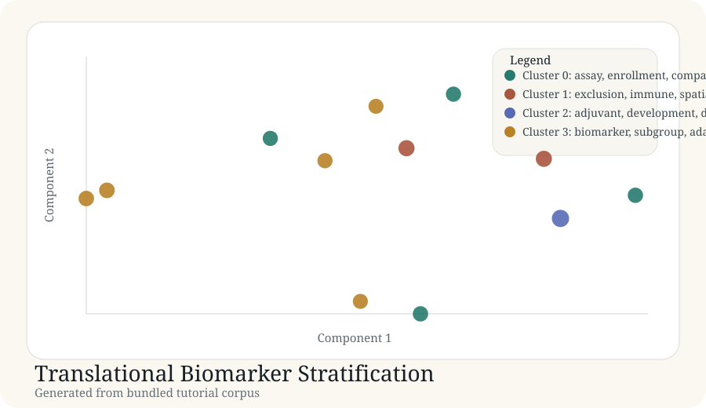

Tutorial article
Translational Biomarker Stratification
This article documents a real generated tutorial run from the bundled corpus in docs/tutorial-data/translational-biomarker-stratification.csv.
Background
Biomarker strategy is central to translational development, but the literature covers multiple layers: diagnostic operations, resistance biology, longitudinal monitoring, and subgroup-aware trial methods.
Purpose
The goal is to show whether a compact corpus still separates those translational layers into useful neighborhoods.
Data used
Source file: translational-biomarker-stratification.csv. The corpus contains 12 records across diagnostics, spatial and single-cell biomarkers, liquid biopsy, and adaptive subgroup methods.
| Record | Title | Year |
|---|---|---|
| biomarker-001 | Companion diagnostic strategy for targeted oncology programs | 2022 |
| biomarker-004 | Single-cell biomarkers of resistance under targeted therapy | 2024 |
| biomarker-006 | Circulating tumor DNA monitoring for early pharmacodynamic readouts | 2022 |
| biomarker-010 | Bayesian subgroup borrowing for biomarker stratified studies | 2024 |
Code used
records = load_records(DATA_DIR / "translational-biomarker-stratification.csv") vocab, vectors, _ = build_tfidf(records) centered, _ = center_vectors(vectors) coords = project(centered, top_components(centered, 2)) labels, centroids = kmeans(vectors, 4)
Result figure

Results
| Cluster | Theme | Size | Mean probability |
|---|---|---|---|
| 0 | assay, enrollment, companion | 4 | 0.75 |
| 1 | exclusion, immune, spatial | 2 | 0.86 |
| 2 | adjuvant, development, disease | 1 | 1.00 |
| 3 | biomarker, subgroup, adaptive | 5 | 0.75 |
Generated artifacts
Interpretation
The article shows that translational biomarker work is not monolithic. Assay operations, resistance-state biology, minimal residual disease, and subgroup design logic form different clusters that matter for program planning.